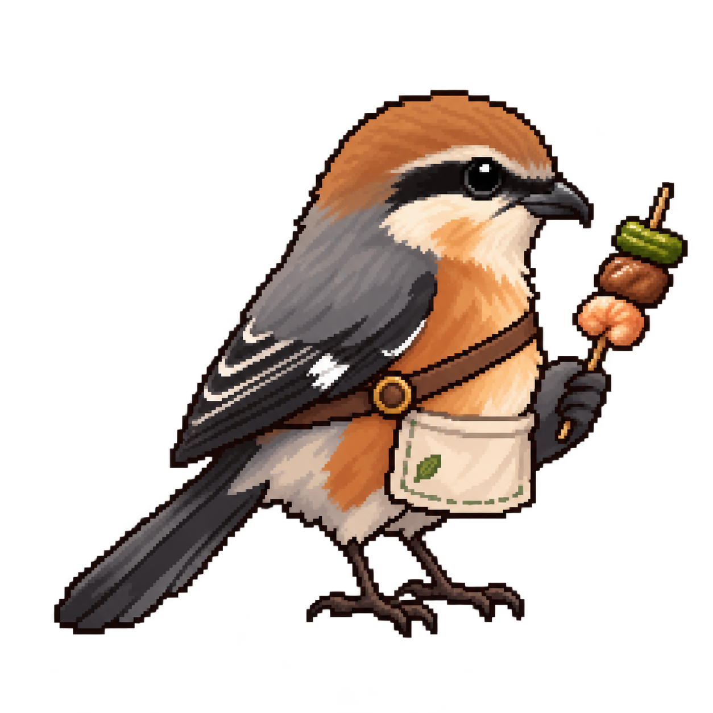
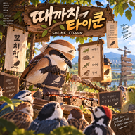

SHRIKE TYCOON
때까치 타이쿤
새들의 꼬치 식당 · World Tour
누적 XP0 XP0회 플레이 · 0명 서빙
🍃 여행지🗺 스테이지🐦 셰프🔥 영업 시작
월드·메뉴 화면은 세로모드를 추천합니다월드 선택과 도감은 세로 화면이 가장 편합니다. 실제 플레이 직전에만 가로모드로 전환해 주세요.

STEP 1 · WORLD
오늘은 어디에서 장사할까?
동아시아 농경지에서 시작해 유럽·북미·아프리카까지 이어지는 100 Stage 월드 투어입니다. 먼저 플레이할 월드를 선택하세요.
DESTINATION POSTCARDS
엽서를 눌러 스테이지 지도를 펼쳐보세요